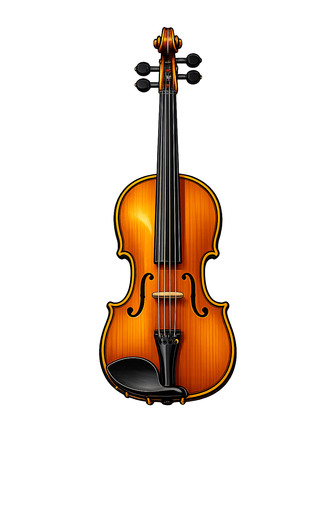
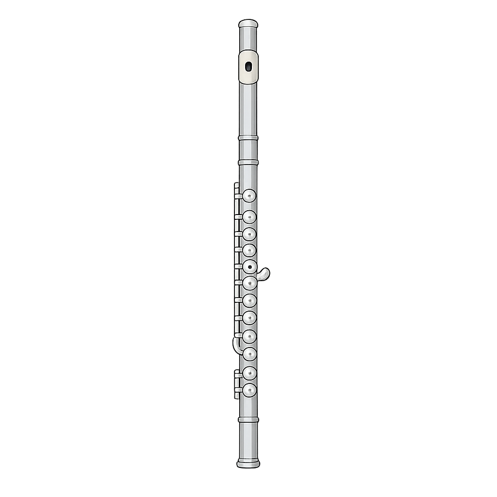
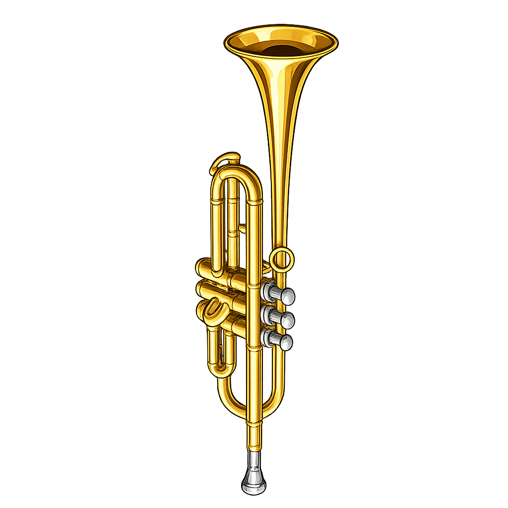
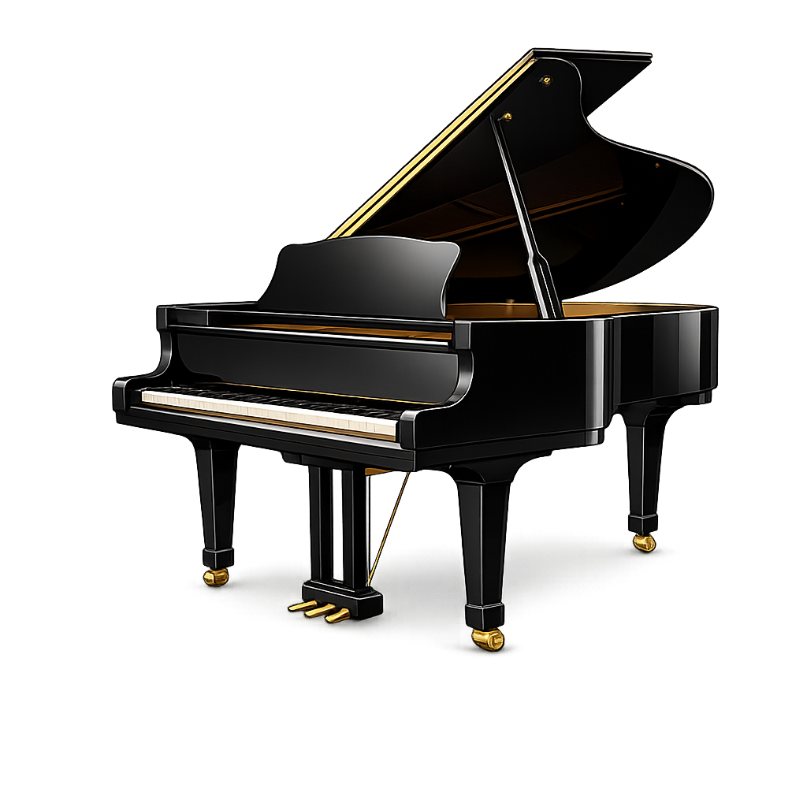
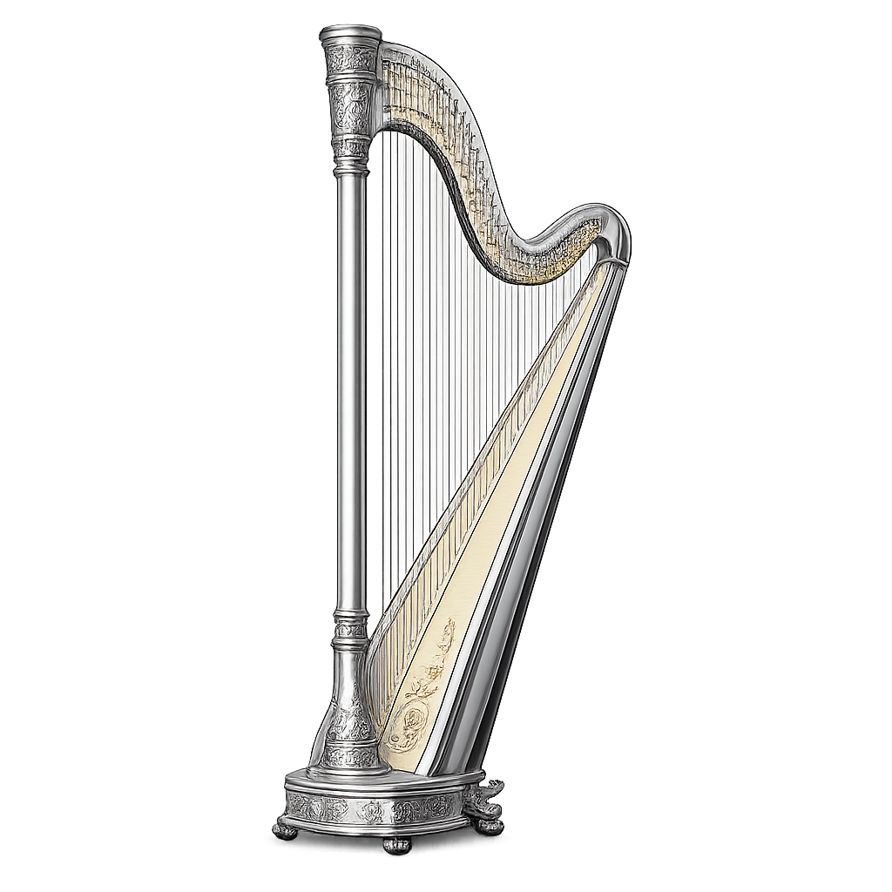
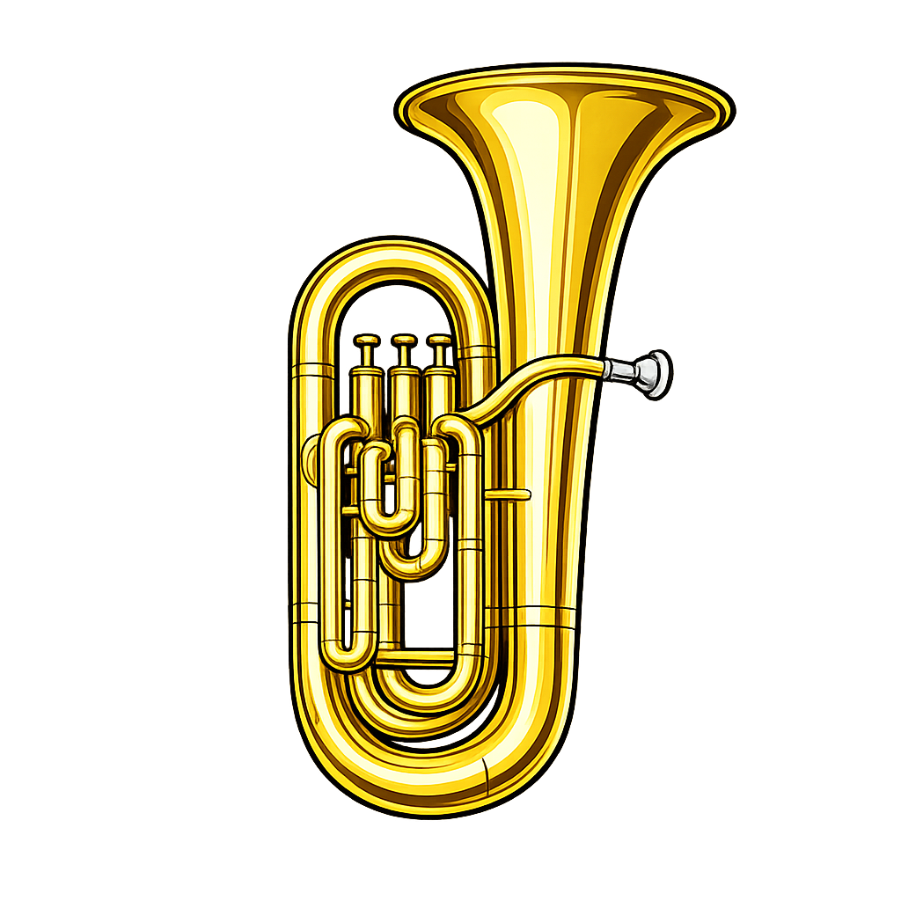

🎻 Violino
Cordas agudas com som cálido, lírico e emotivo

Flauta
Sopro agudo com som leve, suave e cristalino

🎺 Trompete
Sopro médio-agudo com som brilhante e penetrante

🎹 Piano
Teclas do grave ao agudo com som rico e versátil

🎵 Harpa
Cordas médias com som etéreo, delicado e ressonante

🎷 Tuba
Sopro grave com som profundo, cheio e poderoso
